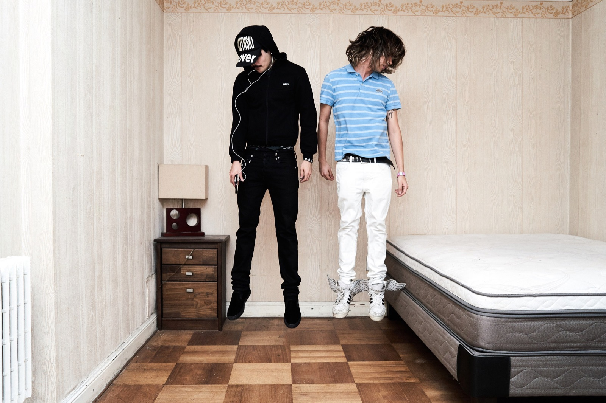
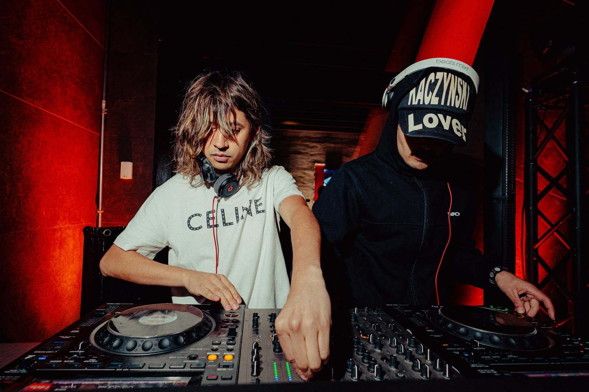
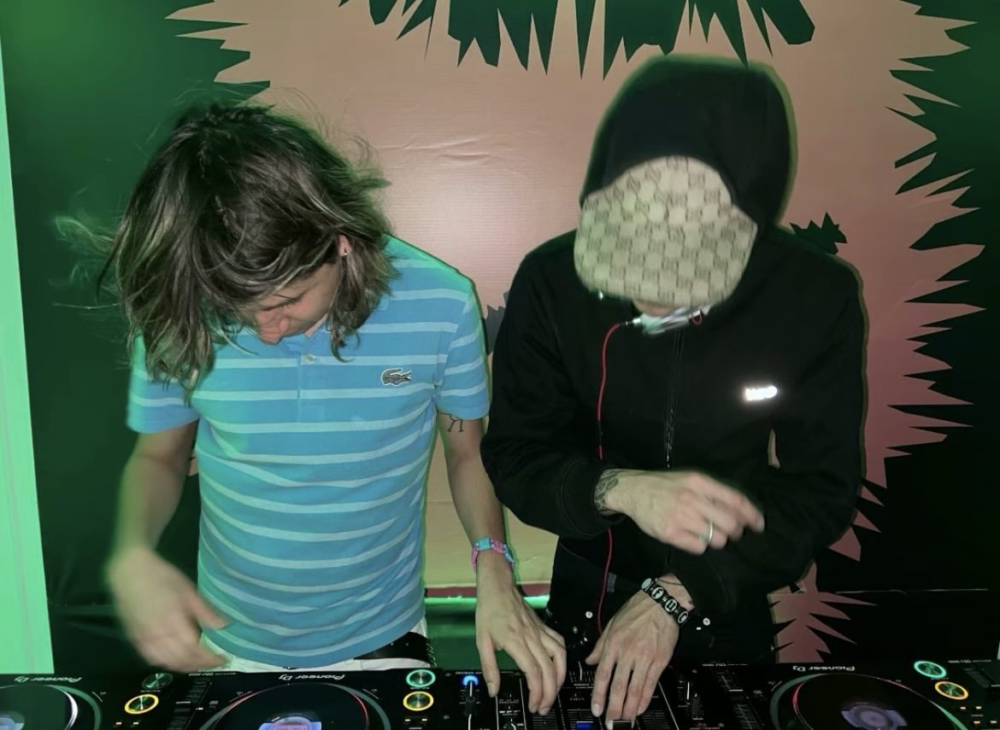
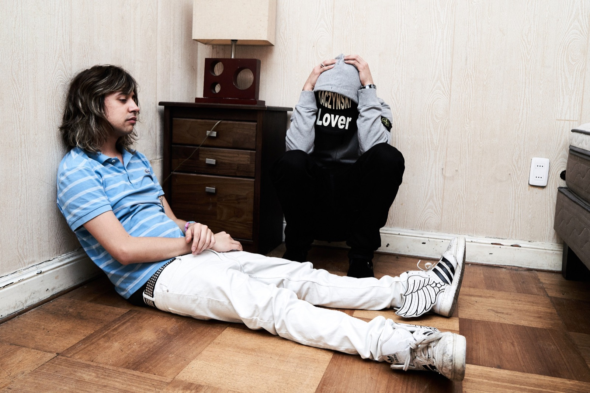
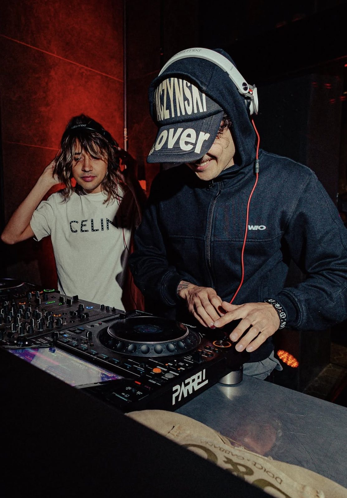

pronto
26 de noviembre
radelica
lanzamiento tienda
booking

Ugly Sexy es un dúo DJ de Santiago que arma sus sets con canciones memorables: clásicos que vuelven, temas nuevos que ya suenan a clásico y transiciones que nadie ve venir. Sin género fijo y sin tomarse tan en serio.
juan + benja

Dos amigos de Quilicura. El dúo nació en las fiestas de Temet: los viernes, una junta que partió con una máquina y un par de Korg y terminó siendo una fiesta chica con la música al centro.

Tocan back to back, un tema cada uno, con la nostalgia como eje: recordar una época a través de una canción. Leen el lugar y arman el set desde ahí.
para fans de daft punk, justice, the hellp, underscores, bassvictim y death grips

Han tocado en Radelica, Scrapworld, Duum y Opposite, con la productora Histerya y en eventos privados de gran convocatoria.
